A life in light.
Portraiture, landscape, and experiments at the intersection of art and engineering.

Flying robots.
Photographic light.
Portraits lit by flying robots—my MIT research in computational rim-illumination, published and exhibited. The drone is in the frame because it belongs there.
Experimental resultsOutdoor tests27 collections shown
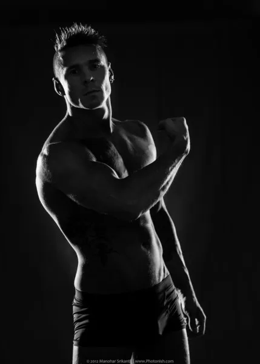
portrait / 17 photographsMonochrome Portraits ↗
Rim-lit muscle studies in black and white. Light doing all the talking.
 portrait / 6 photographs
portrait / 6 photographsFor Prints ↗
Black and white, print-ready — elephant and mahout, framed for delivery.
 portrait / 18 photographs
portrait / 18 photographsBest of Portraits ↗
The strongest portraits, gathered into one tight wall.
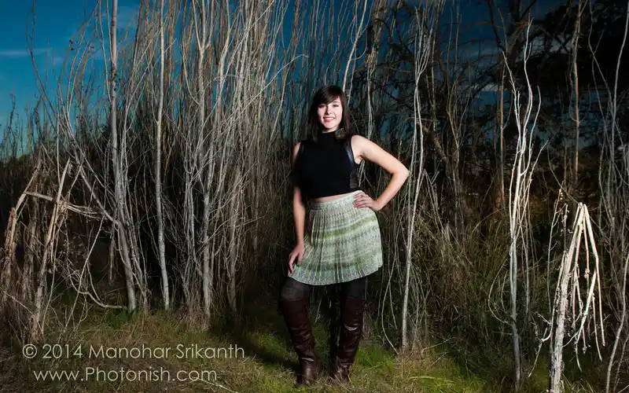
portrait / 36 photographsStephanie ↗
Shoreline Park photoshoot — natural light, long afternoon.
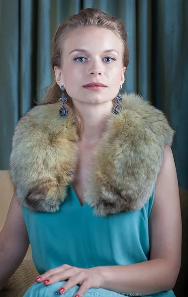
portrait / 45 photographsAndreea ↗
A full portrait session, color and light.
 portrait / 30 photographs
portrait / 30 photographsAndreea II ↗
Second session — a different mood, same muse.
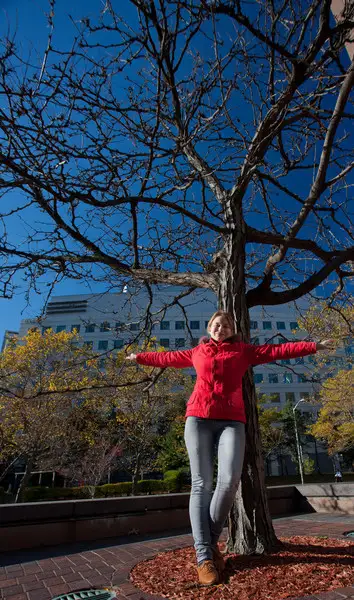
portrait / 31 photographsAndreea III ↗
A third session with Andreea — portraits in a new light.
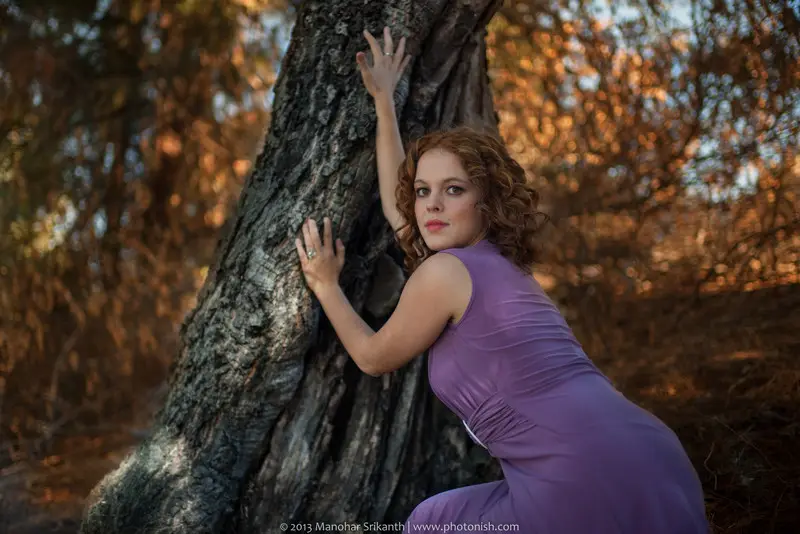
portrait / 20 photographsZhenia ↗
Studio portraits with an edge.
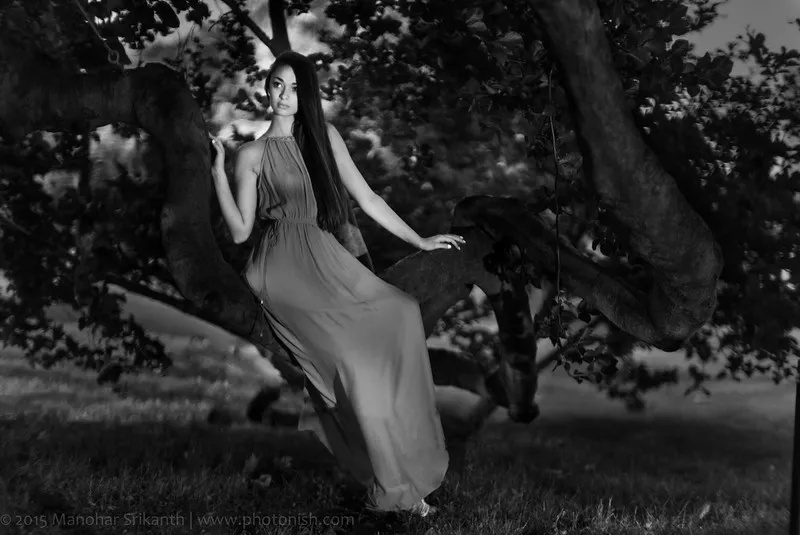
portrait / 7 photographsLauren M ↗
Boston, June 2015.
 portrait / 7 photographs
portrait / 7 photographsDevon ↗
Strobe-lit at Point Reyes National Park.
 portrait / 7 photographs
portrait / 7 photographsCaitlin ↗
Experimental lighting at MIT.
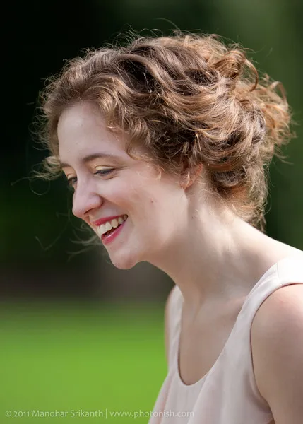
portrait / 11 photographsHarriet Spence ↗
Portrait session with Harriet Spence.
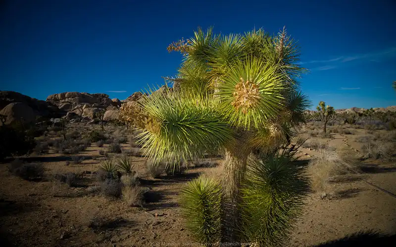
landscape / 44 photographsJoshua Tree ↗
Desert, infrared, and three-flash night work. December 2013.
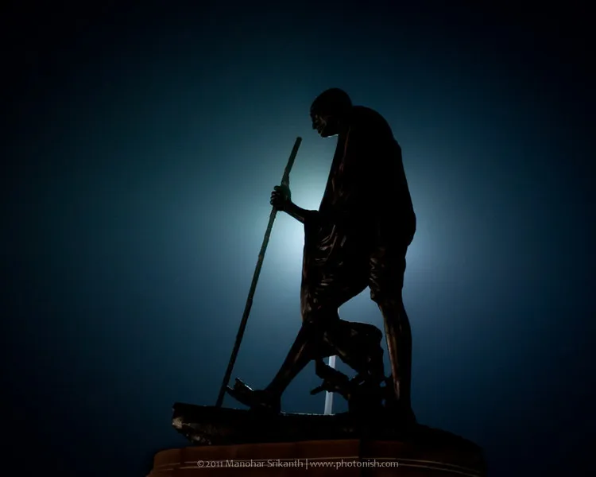
landscape / 48 photographsIndia 2011 ↗
Shot across India — the work behind my “Tales From India” solo show.
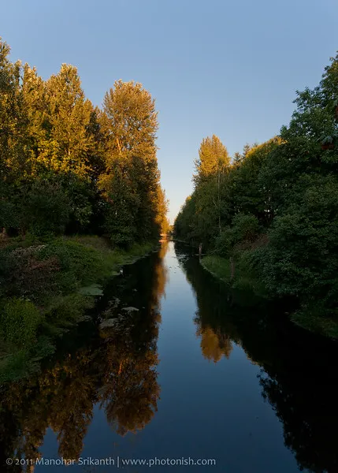
landscape / 48 photographsYellowstone 2011 ↗
A week through the northwest — geysers, canyons, and big sky.
 landscape / 43 photographs
landscape / 43 photographsMonterey 2011 ↗
California coast — Monterey, Santa Cruz, and the Bay.
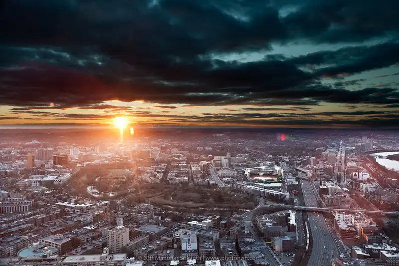
landscape / 42 photographsBoston Skyline ↗
Sunrises, snow, and night over the Charles — panoramas up to 20 feet wide.
 landscape / 19 photographs
landscape / 19 photographsSun & Moon over Boston ↗
The best sun and moon shots over the city, collected.
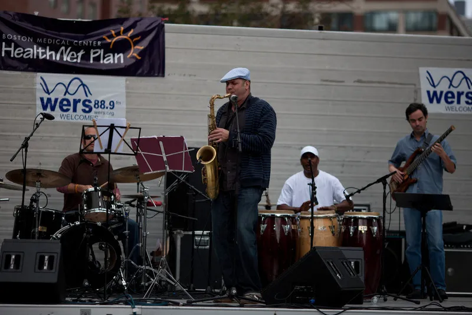
documentary / 118 photographsCambridge Carnival ↗
Street festival at Kendall Square, MIT — September 2010.
documentary / 24 photographsMIT 150 ↗
MIT's sesquicentennial convocation — ceremony and celebration.
 documentary / 14 photographs
documentary / 14 photographsSteven Pinker ↗
His talk on communicating science, at MIT.
 documentary / 30 photographs
documentary / 30 photographsIndia Conference 2011 ↗
The MIT India Conference — speakers and panels.
 documentary / 35 photographs
documentary / 35 photographsSAA Office ↗
Studio headshots — professional portraits on demand.
 experiment / 24 photographs
experiment / 24 photographsLiquid ↗
High-speed water drops, triggered by microcontroller.
 experiment / 14 photographs
experiment / 14 photographsSmoke ↗
Colored smoke — the colors are natural, not post-processed.
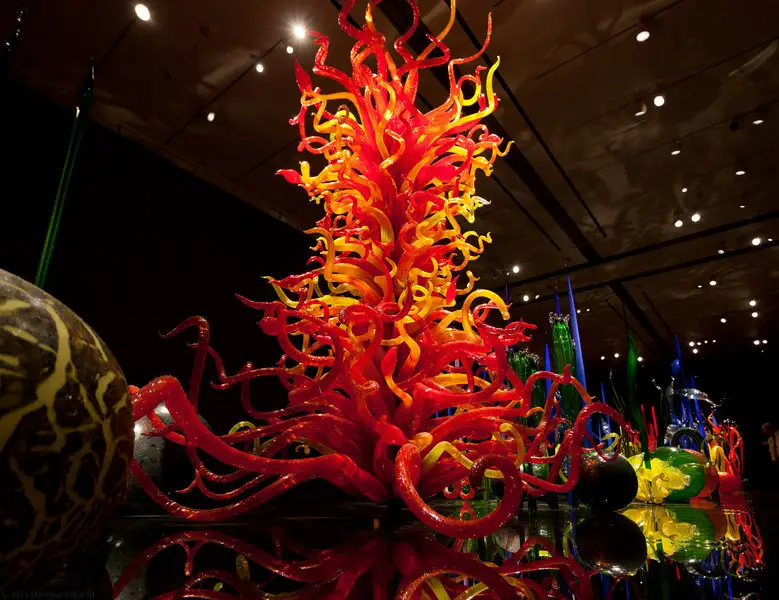
experiment / 38 photographsChihuly ↗
Dale Chihuly's glass at the MFA — color turned to sculpture.
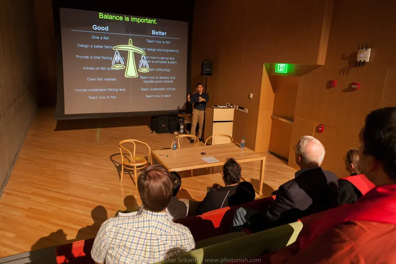
documentary / 48 photographsHH The Dalai Lama, 2012 ↗
An evening with the Dalai Lama at MIT.
Behind the pictures.
At MIT, I taught Digital Photography, photographed for MIT magazines and MIT Technology Review, and covered the Dalai Lama’s 2012 visit. The work has appeared in solo and group exhibitions around Boston, including Tales From India.
Drone-lighting research: MIT News ↗ · TechCrunch ↗ · The paper ↗